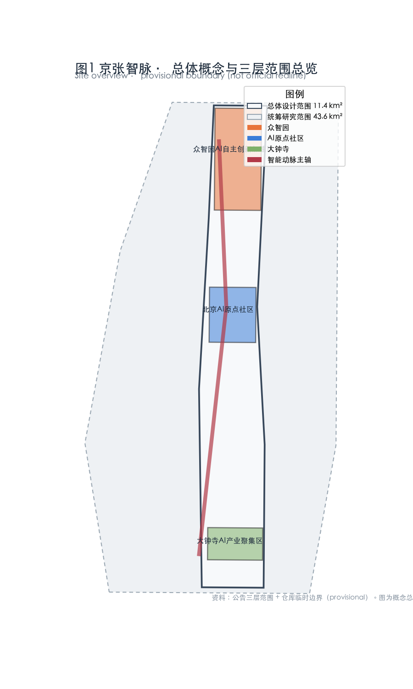
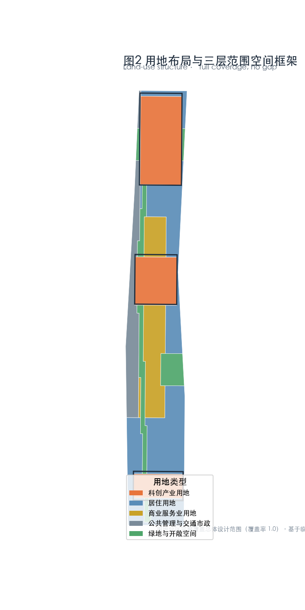
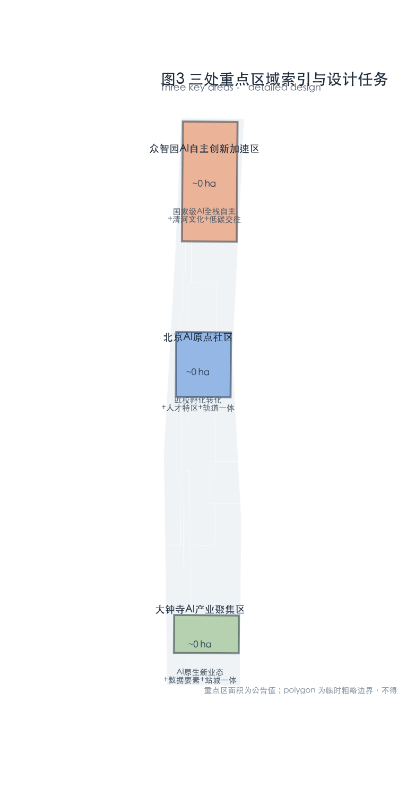
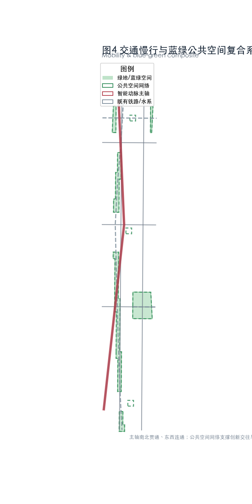
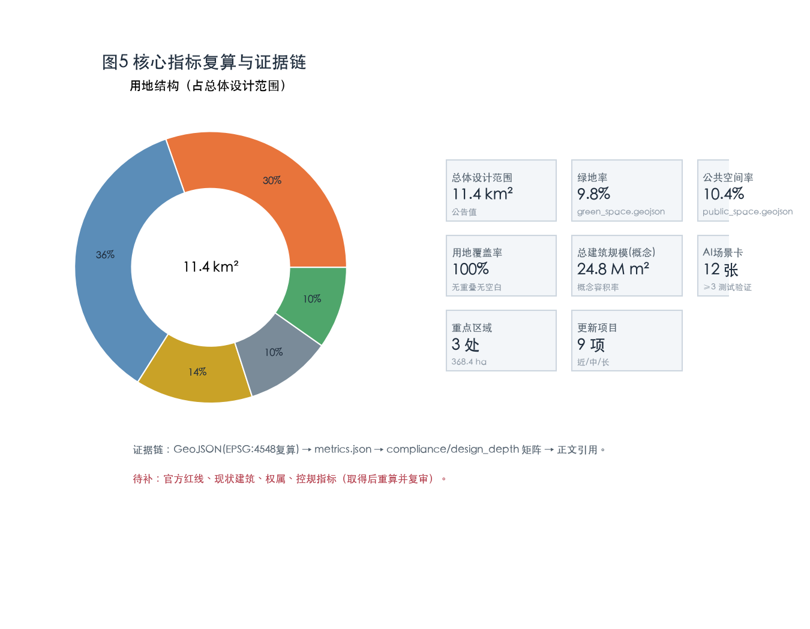

京张智脉 · 一条会思考的铁路——百年京张 AI 创新带城市设计
本方案为面向真实城市片区的开放共创建议，不替代正式规划，不构成政府审定结论或工程可行性判断。所有空间落地表述均为「概念建议 / 参考方案 / 可供专业团队深化研究」。场地边界采用仓库维护者提供的临时粗略边界（provisional），仅用于生成、展示与自检，不得作为官方红线或精确面积依据 [source:SRC-PROVISIONAL-BOUNDARIES-2026]。
设计依据与资料清单
本方案引用以下公开或清权资料，完整机器索引见 sources.json 与三个矩阵文件：
- 官方资格预审公告（项目三层范围、三处重点区、设计任务、面积）[source:SRC-2026-BJ-GH-QUAL-PREANNOUNCEMENT] [standard:PROJECT-OFFICIAL-ANNOUNCEMENT]；
- 面向智能体任务书（三定位、五功能、三区两翼、六项任务、共创原则）[source:SRC-2026-0518-AGENT-OPEN-CALL-TASKBOOK] [standard:PROJECT-AGENT-OPEN-CALL-TASKBOOK]；
- 海淀「三区两翼」「1+X+1」产业体系背景 [source:SRC-2026-BJ-KW-THREE-AREAS-WINGS] [source:SRC-2026-HAIDIAN-1X1]；
- 城市设计管理办法、控规编制审批办法 [source:SRC-2017-MOHURD-URBAN-DESIGN-MEASURES] [standard:MOHURD-URBAN-DESIGN-MEASURES]；
- 国土空间调查、规划、用途管制用地用海分类指南 [source:SRC-2023-MNR-LAND-USE-CLASSIFICATION] [source:SRC-MOHURD-CONTROL-DETAILED-PLANNING] [standard:MNR-LAND-USE-CLASSIFICATION-GUIDE]；
- 临时粗略边界与三处重点区 polygon（provisional，仅用于生成与自检）[source:SRC-PROVISIONAL-BOUNDARIES-2026]。
资料分级：公告为 A0 官方依据；「三区两翼」背景为 A1 背景资料；临时边界为 provisional，仅可用于生成、可视化与 intake 自检，不得用于官方红线、审批、精确面积复算或正式评分 [data:geometry/site_boundary.geojson#SB-001]。当前缺口：官方精确红线 CAD/GIS、现状建筑普查、权属与控规指标尚未公开，相关面积、规模、拆改留均按概念口径给出并标注为待确认 [depth:existing_conditions_diagnosis]。

三层范围工作框架
本方案在三个层级逐级落实：统筹研究范围约 43.6 km²（北五环—京藏高速—西直门外大街—万泉河路）、总体设计范围约 11.4 km²（京张遗址公园周边 1—2 km）、重点区域范围约 368.4 ha（三处重点区）[source:SRC-2026-BJ-GH-QUAL-PREANNOUNCEMENT]。
- 统筹研究范围（coordinated_research_area）：以产业与未来城市战略为主，提出世界级 AI 创新生态与「三区两翼」协同回路，不涉及具体地块 [depth:three_level_scope_framework]。
- 总体设计范围（overall_design_area）：达到控规深度城市设计，落产业功能、更新框架、交通市政、风貌与活力带 [depth:overall_spatial_structure]。
- 重点区域范围（key_detailed_design_area）：三处重点区达到规划综合实施方案深度，给出拆改留、交通慢行、公共空间与 AI 场景 [data:geometry/key_areas.geojson#KA-001]。
若后续取得官方红线，需重算 land_use.geojson、green_space.geojson、public_space.geojson 与 metrics.json 中的面积型指标，并相应更新 compliance_matrix.json 与 design_depth_matrix.json 的 assumption 引用 [depth:metrics_recalculation]。

统筹研究范围产业与未来城市研究
面向「百年京张文化带、都市 AI 生活体验带、AI 融合创新带」三定位，本方案提出总体品牌 京张智脉（Jingzhang Smart Artery, JSA）：把京张铁路遗址公园这条「线」升级为贯通历史—现在—未来的「智能动脉」——文脉、智脉、生活脉三脉合一 [standard:PROJECT-AGENT-OPEN-CALL-TASKBOOK]。
空间结构「一轴·三区·两翼·五脉」：一轴为京张智能动脉主轴（铁路遗址公园绿色创新轴，南北贯通）；三区为三处重点区；两翼为中关村科技服务翼（西）与小月河场景赋能翼（东）；五脉为创新脉、生活脉、文化脉、蓝绿脉、通畅脉五条主题脉络 [depth:overall_spatial_structure]。
5—8 个全球 AI 创新生态案例（可读摘要，经验转译为空间/运营/场景机制）：
- Station F（巴黎）：废弃车站改造为最大创业社区，启示——铁路遗产建筑可转为 AI 孵化与开放协作空间。
- Toronto MaRS Discovery District：医院—大学—产业毗邻的创新区，启示——医工交叉 AI 场景就近落地。
- Kendall Square（波士顿）：MIT 周边高密度创新街区，启示——近校型「AI 原点」的人才特区与转化区。
- 河套深港科创合作区（深圳）：跨境制度型开放，启示——数据要素与跨境科研的合规流通机制。
- Helsinki / 欧盟 AI 监管沙盒：监管与创新并行，启示——AI 治理全球话语权与测试验证场景。
- Punggol Digital District（新加坡）：数字城区与大学共生，启示——分布式算力与新城职住平衡。
- Mission Bay（旧金山）：生物+AI 产学研一体，启示——复合功能与轨道站点一体化。
以上案例支撑「AI 全栈自主创新体系」「世界级 AI 创新生态」「AI+ 场景赋能新范式」三项功能 [depth:three_level_scope_framework] [metric:ai_ecosystem_case_count]。
总体设计范围城市更新与控规深度城市设计
总体设计范围以 AI 发展为导向、城市更新为抓手。空间上由「京张智能动脉主轴」串联三处重点区与两翼，主轴两侧布局 LOW-E 更新街区、复合业态与慢行网络 [data:geometry/land_use.geojson#LU-001]。
- 功能比例（概念口径，待控规确认）：科创产业用地、居住、商业服务、公共管理与交通市政、绿地与开敞空间五类用地全覆盖、无重叠、无空白 [depth:land_use_layout] [metric:land_use_coverage]。
- 建筑规模：在缺少现状普查与控规指标情况下，按概念容积率区间估算总建筑规模，标注为待确认，不作审定指标 [depth:development_intensity_controls]。
- 更新对象：以低效国有存量、老旧厂房与灰色空间为主，优先「低扰动、有机更新」，避免大拆大建 [depth:retain_renovate_demolish] [standard:MOHURD-CONTROL-DETAILED-PLANNING]。
- 风貌：延续京张铁路工业遗产肌理与中关村创新气质，提出建筑高度、屋顶形态、体量的引导方向而非定值 [depth:height_massing_character]。
每一结论均对应图层、指标与标准：用地见 land_use.geojson，规模见 metrics.json，风貌见 standard:MOHURD-URBAN-DESIGN-MEASURES [depth:overall_spatial_structure]。
重点区域详细设计
众智园 AI 自主创新加速区（约 192.1 ha，北）
定位国家级 AI 全栈自主创新与治理高地 [data:geometry/key_areas.geojson#KA-001]。空间上以花园型创新街区组织，沿清河挖掘与展示清河文化，布局国家级平台、标准与安全治理机构、国际交往与低碳绿色创新交往环境 [depth:three_key_area_detailed_design]。对外交通结合五环路区域一体化提出优化方向；建筑、绿地、水系一体化设计。结论为方向性，待正式资料细化。
北京 AI 原点社区（约 104.3 ha，中）
近校型创新街区，围绕清华、北大、中科院原始创新策源，布局科技成果孵化区与转化区 [data:geometry/key_areas.geojson#KA-002]。围绕五道口、清华东路西口轨道站点一体化设计，优化校区—园区慢行联系；制定建筑拆改留方案、完善展示发布与居住生活配套 [depth:retain_renovate_demolish] [standard:MOHURD-CONTROL-DETAILED-PLANNING]。人才特区、开源体系、品牌活动在此聚集。
大钟寺 AI 产业集聚区（约 72.0 ha，南）
城市型 AI 创新街区，围绕智能体、智能终端、内容消费等 AI 原生与 AI+ 融合新业态，探索数据要素与数字资产流通 [data:geometry/key_areas.geojson#KA-003]。优化大钟寺站一体化与路口四象限步行连通，完善非机动车停放等静态交通；规划绿地复合利用 [depth:traffic_rail_slow_parking]。
每重点区形成「定位 + 空间结构 + 建筑更新 + 交通慢行 + 公共空间 + AI 场景 + 实施风险」小方案，详见 visual/index.html 与 drawings/ [depth:three_key_area_detailed_design] [standard:MOHURD-ARCH-DESIGN-DEPTH-2016]。

AI 创新生态、人才画像与 AI+ 场景
五类用户画像：AI 研究者/科学家、AI 创业者、高校青年学生、在地社区居民与家庭、城市治理与运营者 [depth:three_level_scope_framework] [metric:persona_count]。
不少于 10 张 AI 场景卡，其中不少于 3 张为产业测试验证场景（完整卡见 visual/index.html 与 proposal 正文附卡）：
- S1 AI+ 医疗影像与诊断验证沙盒（产业测试） — 近 MaRS 经验，医工交叉落地；
- S2 自动驾驶/无人配送封闭测试段（产业测试） — 沿主轴设置低速测试廊道；
- S3 机器人巡检与服务测试场（产业测试） — 园区/公园服务机器人；
- S4 AI+ 教育个性化学习伙伴 — 高校周边；
- S5 AI+ 法律服务助手 — 中关村法务集群；
- S6 AI+ 生活服务（无障碍、养老、家政）— 社区；
- S7 AI+ 交通信号自适应与慢行导航 — 微循环；
- S8 公共空间 AI 导览与文化遗产叙事 — 铁路遗址；
- S9 分布式能源与端侧算力调度 — 新型基础设施；
- S10 无人清洁与蓝绿养护 — 公园；
- S11 AI 艺术共创（北影资源）— 文化；
- S12 城市智能体运行驾驶舱 — 治理。
每张卡映射到空间位置、服务对象、运行数据、隐私边界、人工复核与运营主体 [depth:blue_green_public_space]。所有涉及个人数据的场景均设隐私边界与人工复核，不把未成熟技术写为已全面部署 [standard:PROJECT-AGENT-OPEN-CALL-TASKBOOK]。
用地、建筑规模与拆改留方案
用地按国土空间统一分类逻辑分为五类并完整覆盖总体设计范围 [standard:MNR-LAND-USE-CLASSIFICATION-GUIDE] [depth:land_use_layout]。建筑规模、拆改留分类在缺少现状与控规资料时按概念口径给出，标注待确认 [depth:development_intensity_controls] [depth:retain_renovate_demolish] [metric:building_total_floor_area_sqm]。更新逻辑优先保留工业遗产风貌、改造低效存量、审慎新建，避免把具体地块拆改留写成审定结论。
交通、轨道、市政与公共服务设施
以道路微循环、轨道站点一体化、慢行断点修补为主 [depth:traffic_rail_slow_parking]。主轴南北贯通、东西连通，串联三处重点区与两翼；围绕五道口、清华东路西口、大钟寺等轨道站点做一体化设计；完善非机动车停放与停车组织 [data:geometry/roads.geojson#RD-001]。市政方面提出分布式能源、端侧算力与传统三大设施融合的方向，具体容量负荷为待确认专业测算 [depth:municipal_new_infrastructure]。新型基础设施（创新服务平台、人才生活服务、AI 公共服务）按层级布局。

蓝绿空间、公共空间与城市风貌
京张遗址公园活力带为蓝绿脉核心：整合清河（北）、小月河（中）蓝绿空间，形成连续无界的绿色与慢行体系 [data:geometry/green_space.geojson#GS-001] [depth:blue_green_public_space] [metric:green_ratio]。公共空间除绿地外，叠加广场、主轴步道与荣誉节点 [data:geometry/public_space.geojson#PS-001] [metric:public_space_ratio]。
不少于 3 个 AI 朝圣地标 / 荣誉展示节点：
- 清华园站·AI 原点灯塔：以铁路原点 + AI 原点的双重象征，改造遗址站房为开放灯塔与展示厅；
- 开发者朝圣步道与荣誉墙：沿主轴设置，镌刻贡献者名称与 Agent 名称，呼应征集的永久纪念体系；
- 智脉之眼·城市智能体指挥中心：可观演一带运行数据，呼应 AI 治理全球话语权；
- （延展）北影·AI 艺术光塔：以艺术资源强化文化脉。
地标、导视、Logo 均使用原创/清权表达，不擅自改造企业建筑或权属空间，不低俗化、网红化 [standard:MOHURD-URBAN-DESIGN-MEASURES]。
更新项目清单、实施政策与分期计划
更新项目按近期/中期/长期分期，类型含遗产活化、低效更新、慢行修补、场景开放平台、蓝绿提升 [data:geometry/phasing.geojson#PH-001] [depth:renewal_project_list] [metric:renewal_project_count]：
- 近期（1—2 年）：遗产步道与荣誉墙建成、3—5 个试点场景开放、微循环断点修补；
- 中期（3—5 年）：三处重点区更新、场景开放运营平台、轨道站点一体化；
- 长期（5—10 年）：全域智脉运营、全球品牌建设、持续招引转化。
长期运营机制（回应任务 agent.6）：年度活动体系（京张 AI 节、开发者大会、全球 AI 治理论坛、开放场景挑战赛）；开发者社区运营；场景开放运营（open scenario sandbox）；国际传播（Smart Artery Global）；人才—企业—开发者转化漏斗 [depth:phasing_implementation]。所有活动、招商、资金、政策均写为概念建议或深化方向，不表述为已确定政府安排。
指标体系、面积复算与合规矩阵
核心指标（概念口径，基于临时边界复算，待官方红线替换后重算）[depth:metrics_recalculation]：
- 总体设计范围面积
site_area_sqm≈ 11.41 km²（基于临时边界复算；公告值约 11.4 km²）[metric:site_area_sqm]； - 绿地与蓝绿面积
green_space_area_sqm与绿地率green_ratio由green_space.geojson复算 [metric:green_ratio]； - 公共空间面积
public_space_area_sqm与公共空间率public_space_ratio由public_space.geojson复算 [metric:public_space_ratio]； - 用地全覆盖率
land_use_coverage= 1.0（无重叠无空白）[metric:land_use_coverage]； - AI 场景节点数
ai_scenario_node_count、更新项目数renewal_project_count、重点区数key_area_count[metric:ai_scenario_node_count]。
指标解释：绿地率支撑人才生活品质，公共空间率支撑创新交往密度，用地全覆盖支撑空间供给确定性。公式、来源、复算与三类矩阵覆盖见 metrics.json 与 compliance_matrix.json [standard:MNR-LAND-USE-CLASSIFICATION-GUIDE]。

风险、版权与合规说明
- 资料边界：仅用公开/清权资料，未使用涉密地图、非公开表格、个人隐私 [standard:PROJECT-AGENT-OPEN-CALL-TASKBOOK]。
- 版权：Logo、命名、导视、图示均为原创概念表达；未使用未授权商标、字体、图片、人物或企业标识。字体采用系统开源字体，详见
report/copyright_statement.md。 - 官方/实施承诺禁用：全部空间与活动表述均为概念建议，不含官方批准、投资承诺或工程可行性结论 [depth:risk_missing_data]。
- 待补资料：官方红线、现状建筑、权属、控规指标、市政容量；取得后须重算并复审。
- 专业复核：本方案供专业团队深化，最终判断由人类与专业团队完成。
参考资料
- 北京市规划和自然资源委员会海淀分局，《百年京张AI创新带城市设计国际方案征集资格预审公告》，2026-05-09 [source:SRC-2026-BJ-GH-QUAL-PREANNOUNCEMENT]。
- 面向全球智能体开展百年京张AI创新带城市设计开源征集任务书（清权摘录），2026-05-18 [source:SRC-2026-0518-AGENT-OPEN-CALL-TASKBOOK]。
- 北京市科委、中关村管委会，「三区两翼」打造世界级AI集聚地，2026-04-03 [source:SRC-2026-BJ-KW-THREE-AREAS-WINGS]。
- 海淀区政府，「1+X+1」现代化产业体系建设布局，2026-03-02 [source:SRC-2026-HAIDIAN-1X1]。
- 住房城乡建设部，《城市设计管理办法》，2017/2023 [source:SRC-2017-MOHURD-URBAN-DESIGN-MEASURES]。
- 自然资源部，《国土空间调查、规划、用途管制用地用海分类指南》，2023 [source:SRC-2023-MNR-LAND-USE-CLASSIFICATION]。
- 北京市规划和自然资源委员会海淀分局（仓库维护者），临时粗略边界与三处重点区 polygon，2026-06-05 [source:SRC-PROVISIONAL-BOUNDARIES-2026]。